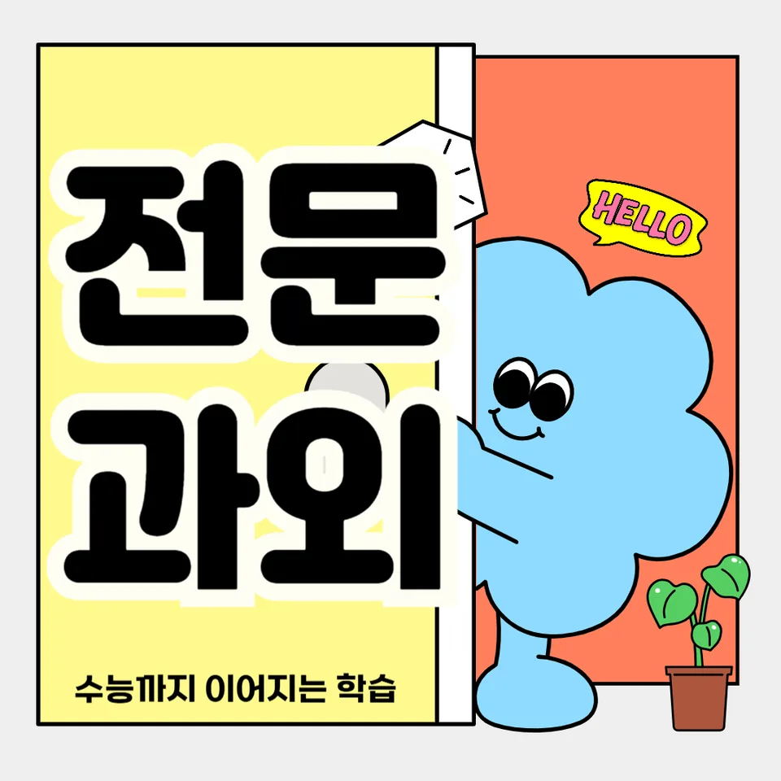

PageType : DONG
URL : /경기도과외/성남시과외/수정구과외/수진동과외/
지역 학습환경과 학생들의 변화
수진동과외를 찾는 학생들은 “학교 수업은 듣는데, 집에서 흐름이 끊긴다”는 공통된 표정을 보입니다. 수업이 끝난 뒤 학습 환경이 단단해지면 변화가 먼저 티가 나는데, 특히 공부 습관이 정리되면서 필기 방식과 복습 간격이 자연스럽게 바뀝니다. 수진동 지역은 학원 선택지가 있는 만큼 경쟁도 존재하지만, 학생에게 필요한 건 단순한 속도보다 꾸준함의 기준입니다.
학생들은 수진동과외 수업을 시작하며 ‘오늘 할 일’을 분명히 세우는 연습을 합니다. 그러다 보면 숙제만 끝내던 흐름에서, 이해가 부족한 단원을 따로 표시하고 다음 주에 다시 확인하는 방식으로 바뀝니다. 결과적으로 수진동과외는 성적을 끌어올리는 도구가 되기 전에, 공부 태도 자체를 안정시키는 역할을 합니다.
학부모가 많이 고민하는 부분
학부모가 가장 자주 묻는 질문은 “내신이 흔들릴 때 어디부터 잡아야 하나요?”입니다. 시험이 가까워졌을 때 문제풀이만 늘리면 단기 점수는 오를 수 있지만, 약점의 원인이 그대로 남아 다음 시험에서 다시 흔들리는 경우가 많습니다. 그래서 수진동과외에서는 학습 태도와 점검 방식부터 다룹니다.
또 다른 고민은 시간관리입니다. 방학이나 주말에 공부량을 늘려도 성과가 들쭉날쭉하면, 학생이 시간을 보내는 방식 자체가 문제일 수 있습니다. 수진동과외는 “얼마나 오래 했는가”보다 “무엇을 확인했는가”를 기준으로 계획을 설계합니다. 그 과정에서 학부모는 학생의 진행 상황을 더 객관적으로 보게 되고, 걱정이 줄어드는 편입니다.
학년이 올라갈수록 달라지는 공부
학년이 올라가면 같은 과목이라도 요구 수준이 바뀝니다. 초반에는 개념을 배우는 시간이 중심이라면, 중간 이후부터는 서술형과 유형 적응이 중요해집니다. 이때 수진동과외를 통해 가장 많이 달라지는 부분은 ‘공부의 목적’입니다. 처음엔 “문제를 푸는 이유”를 명확히 이해하고, 이후에는 “틀린 이유를 분류하는 습관”이 자리 잡습니다.
중·고로 갈수록 성적은 공부량만큼이나 학습 순서에 좌우됩니다. 학생이 쉬운 단원에 시간을 오래 쓰면 전체 평균이 정체되고, 어려운 단원을 미루면 시험 직전에 무너지기 쉽습니다. 수진동과외는 학습 계획을 과목별 우선순위로 재조정해, 학년이 바뀌어도 흔들리지 않는 공부 습관을 만들도록 돕습니다.
학교생활과 내신 준비
학교생활에서는 수업 태도와 수행평가 대응이 성적의 바탕이 됩니다. 수업 시간에 필기가 정리되지 않으면 복습이 늦어지고, 결국 시험 범위가 넓을 때 불안해집니다. 수진동과외는 학교에서 배우는 흐름을 그대로 따라가되, 학생이 놓치는 구간을 먼저 찾아 내신 준비가 늦어지지 않게 합니다.
특히 내신은 과목마다 체감 난도가 다르고, 서술형/단답형/형성평가가 섞여 나타납니다. 학생이 “무엇을 외웠는지”보다 “왜 틀렸는지”를 기록하면 내신 점수가 안정적으로 상승합니다. 수진동과외에서는 시험 전 주간의 목표를 단순 반복이 아니라 점검 중심으로 바꿔, 시험 기간이 되어도 마음이 덜 급해지는 모습을 자주 확인합니다.
자기주도학습이 중요한 이유
자기주도학습은 말처럼 거창하지 않습니다. 매일 같은 시간을 지키는 것보다, 오늘의 학습이 다음 날 어떤 형태로 이어지는지가 핵심입니다. 수진동과외를 통해 학생들은 계획-실행-점검의 고리를 배우고, 과제를 끝내는 데서 그치지 않고 자신의 이해 수준을 체크하는 법을 익힙니다.
학습 단계가 정리되면 학생은 ‘공부를 해야 한다’는 압박보다 ‘확인할 것이 있어서 하는 공부’로 바뀝니다. 이 차이는 집중 시간과 오답 처리 방식에 그대로 반영됩니다. 결국 자기주도학습은 스스로 공부하게 만드는 과정이면서, 학부모의 개입을 적절한 선에서 정리해 주는 방향으로 이어집니다.
공부 습관이 성적에 미치는 영향
공부습관은 시험 직전 성적만이 아니라, 학기 전체의 흐름을 바꿉니다. 수진동과외에서 자주 보는 변화는 복습의 타이밍이 달라진다는 점입니다. 처음엔 ‘시험 보기 전날’에 몰리는 학생이 많지만, 점검이 시작되면 개념 정리-문제 적용-오답 정리의 순서를 고정합니다.
또 한 가지는 필기 습관입니다. 단순히 예쁘게 쓰는 것이 아니라, 시험에서 자주 묻는 형태로 표시하고 필요한 근거를 남기는 방식으로 바뀌면 서술형과 단원형 문제 대응이 빨라집니다. 결과적으로 내신 성적이 오르는 속도도 달라지며, 학생 스스로도 “내가 왜 올랐는지”를 설명할 수 있게 됩니다.
체크해야 할 학습 포인트
수진동과외를 선택하거나 공부 방향을 점검할 때, 아래 항목을 기준으로 학생 상태를 확인해 보세요. 겉으로 문제를 많이 푸는지보다, 학습 태도와 점검 습관이 자리 잡았는지가 더 중요합니다.
- 수업 후 24시간 안에 핵심 내용을 다시 정리했는지(복습 타이밍)
- 오답이 “문제만 다시 풀기”로 끝나지 않고 원인 분류가 되는지
- 시험 범위가 넓을 때 우선순위를 정해 공부 순서를 지키는지
- 과목별 시간관리 계획이 실제 실행으로 이어지는지(자기주도학습)
수진동과외로 만드는 공부 분위기와 실제 사례
수진동과외에서는 학생이 매일 같은 방식으로 공부하지 못해도, 무너지지 않는 루틴을 먼저 세웁니다. 예를 들어 시험 전에는 ‘풀기’보다 ‘확인’이 더 많은 시간이 되도록 조절합니다. 개념 체크를 짧게 하고, 자주 틀리는 유형을 중심으로 문장을 완성시키며, 마지막에는 틀린 이유를 다시 말로 정리하게 합니다. 이 과정에서 학생의 공부 분위기가 달라집니다.
한 사례로, 수진동과외 시작 후 한 달째 성적 변동이 크지 않았던 학생이 있었지만 곧바로 태도가 바뀌었습니다. 숙제를 미루던 습관이 줄고, 계획표를 스스로 갱신하기 시작했으며, 내신 시험에서 서술형 문항의 빈칸이 줄어드는 흐름이 나타났습니다. 수진동과외는 단기간 점수만 만드는 대신, 시험이 바뀌어도 유지되는 학습 구조를 만들어 주는 데 강점이 있습니다.
자주 묻는 질문
수진동과외는 내신 대비에 어떤 방식으로 도움이 되나요?
수업에서 놓친 개념을 확인한 뒤, 시험에 출제되는 형태로 문제를 연결하고 오답 원인을 정리해 내신 점수가 흔들리지 않게 설계합니다.
시험 기간에 공부 계획을 어떻게 세우는 편인가요?
수진동과외에서는 과목별 우선순위를 먼저 정하고, 매일의 목표를 ‘풀기’가 아니라 ‘점검’ 중심으로 구성해 집중을 유지합니다.
자기주도학습이 부족한 학생도 가능한가요?
가능합니다. 처음부터 완벽한 계획을 요구하지 않고, 계획-실행-점검의 반복으로 학생이 스스로 확인하는 습관을 만들도록 돕습니다.
공부 습관이 낮은 학생은 어디부터 바꾸나요?
공부습관 중에서도 복습 타이밍, 오답 처리, 시간관리처럼 재현 가능한 부분부터 교정하며, 그 다음에 공부 계획의 디테일을 확장합니다.
학교생활은 잘하는데 성적이 안 나오는 경우도 있나요?
있습니다. 수진동과외는 학교생활의 강점은 유지하되, 수업 후 정리 방식과 내신 유형 적용에서 간극이 생기지 않게 보완합니다.
